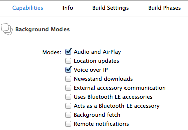

简介
在上一篇的基础上，我们就可以实现iOS上的VOIP功能了。本篇先简单的介绍pjsip中基本功能的实现，再介绍下iOS上独有的技术要点。这里所说的基本功能包括：
- 注册到服务器
- 拨打电话
- 接听电话
- 挂断电话
sip服务器
服务器有很多选择，也可以本地搭建。我这里使用的是MINISIPSERVER云，支持添加多个账号，但通话时长限制在60秒，用于demo是足够的了。具体的注册请自行处理。
基本功能实现
上一篇中用到的iOS demo位于/pjsip-apps/src/pjsua/ios，这里呢将使用一个简单的demo来学习基本功能的使用：/pjsip-apps/src/samples/simple_pjsua.c。
注册
main函数中完成了服务器的注册功能，整理如下：
pjsua_acc_id acc_id;
pj_status_t status;
/* Create pjsua first! */
status = pjsua_create();
if (status != PJ_SUCCESS) error_exit("Error in pjsua_create()", status);
/* Init pjsua */
{
pjsua_config cfg;
pjsua_logging_config log_cfg;
pjsua_config_default(&cfg);
cfg.cb.on_incoming_call = &on_incoming_call;
cfg.cb.on_call_media_state = &on_call_media_state;
cfg.cb.on_call_state = &on_call_state;
pjsua_logging_config_default(&log_cfg);
log_cfg.console_level = 4;
status = pjsua_init(&cfg, &log_cfg, NULL);
if (status != PJ_SUCCESS) error_exit("Error in pjsua_init()", status);
}
/* Add UDP transport. */
{
pjsua_transport_config cfg;
pjsua_transport_config_default(&cfg);
cfg.port = 5060;
status = pjsua_transport_create(PJSIP_TRANSPORT_UDP, &cfg, NULL);
if (status != PJ_SUCCESS) error_exit("Error creating transport", status);
}
// Add TCP transport. background mode required!!!
{
// Init transport config structure
pjsua_transport_config cfg;
pjsua_transport_config_default(&cfg);
cfg.port = 5060;
// Add TCP transport.
status = pjsua_transport_create(PJSIP_TRANSPORT_TCP, &cfg, &tcpTransport);
if (status != PJ_SUCCESS) error_exit("Error creating TCP transport", status);
}
/* Initialization is done, now start pjsua */
status = pjsua_start();
if (status != PJ_SUCCESS) error_exit("Error starting pjsua", status);
/* Register to SIP server by creating SIP account. */
{
pjsua_acc_config cfg;
pjsua_acc_config_default(&cfg);
cfg.id = pj_str("sip:" SIP_USER "@" SIP_DOMAIN);
cfg.reg_uri = pj_str("sip:" SIP_DOMAIN);
cfg.cred_count = 1;
cfg.cred_info[0].realm = pj_str(SIP_DOMAIN);
cfg.cred_info[0].scheme = pj_str("digest");
cfg.cred_info[0].username = pj_str(SIP_USER);
cfg.cred_info[0].data_type = PJSIP_CRED_DATA_PLAIN_PASSWD;
cfg.cred_info[0].data = pj_str(SIP_PASSWD);
status = pjsua_acc_add(&cfg, PJ_TRUE, &acc_id);
if (status != PJ_SUCCESS) error_exit("Error adding account", status);
}
在Init pjsua部分，注册了3个回调函数。这3个回调就可以基本满足我们的需要。另外，和demo不一样的是，我在这里添加了TCP transport，因为iOS上后台运行的实现中，pjsip需要使用tcp连接。
拨打电话
拨打电话需要调用：
status = pjsua_call_make_call(acc_id, &uri, 0, NULL, NULL, NULL);
if (status != PJ_SUCCESS) error_exit("Error making call", status);
}
acc_id是注册时候添加到server中使用过的，和socket一样，是个标识连接的整数。uri是形如number@sipserver的参数。
接听电话
接听电话是在如下的回调函数中实现的：
static void on_incoming_call(pjsua_acc_id acc_id, pjsua_call_id call_id,
pjsip_rx_data *rdata)
{
pjsua_call_info ci;
PJ_UNUSED_ARG(acc_id);
PJ_UNUSED_ARG(rdata);
pjsua_call_get_info(call_id, &ci);
PJ_LOG(3,(THIS_FILE, "Incoming call from %.*s!!",
(int)ci.remote_info.slen,
ci.remote_info.ptr));
/* Automatically answer incoming calls with 200/OK */
pjsua_call_answer(call_id, 200, NULL, NULL);
}
主要的是pjsua_call_answer，call_id是用来区分哪个号码打进来的。
在这里也说一下其他回调函数的实现：
static void on_call_media_state(pjsua_call_id call_id)
{
pjsua_call_info ci;
pjsua_call_get_info(call_id, &ci);
if (ci.media_status == PJSUA_CALL_MEDIA_ACTIVE) {
// When media is active, connect call to sound device.
pjsua_conf_connect(ci.conf_slot, 0);
pjsua_conf_connect(0, ci.conf_slot);
}
}
控制语音，这里做的事情是连接语音到硬件设备。
static void on_call_state(pjsua_call_id call_id, pjsip_event *e)
{
pjsua_call_info ci;
PJ_UNUSED_ARG(e);
pjsua_call_get_info(call_id, &ci);
PJ_LOG(3,(THIS_FILE, "Call %d state=%.*s", call_id,
(int)ci.state_text.slen,
ci.state_text.ptr));
switch (ci.state)
{
}
}
很显然，这里视通话的不同状态，做不同的操作，如控制通话状态，程序UI调整等等。
挂断电话
一种是不分青红皂白，全部挂断：
pjsua_call_hangup_all();
一种是挂断某一个，这时需要call_id:
pjsua_call_hangup(callID, code, &reason, NULL);
这里的code和reason也可以忽略。
VOIP在iOS上的实现要点
官方很贴心的列举了Tips for Developing a VoIP App，摘抄如下：
- Enable the Voice over IP background mode for your app. (Because VoIP apps involve audio content, it is recommended that you also enable the Audio and AirPlay background mode.) You enable background modes in the Capabilities tab of your Xcode project.
- Configure one of the app’s sockets for VoIP usage.
- Before moving to the background, call the setKeepAliveTimeout:handler: method to install a handler to be executed periodically. Your app can use this handler to maintain its service connection.
- Configure your audio session to handle transitions to and from active use.
- To ensure a better user experience on iPhone, use the Core Telephony framework to adjust your behavior in relation to cell-based phone calls; see Core Telephony Framework Reference.
- To ensure good performance for your VoIP app, use the System Configuration framework to detect network changes and allow your app to sleep as much as possible
下面我们来应用到iOS的项目中。
后台应用
现在设置app为后台应用非常简单，只需要选中app后在Capabilities中设置即可：

设置socket
这里我们需要在注册服务器的时候使用tcp信道，其余的事情，pjsip已经帮我们处理好了。这里要注意的是，上文添加tcp transport的不分并不意味着就已经使用了tcp连接，pjsip有这方面的说明：Using_SIP_TCP。
另外，需要说明的是，对uri直接添加;transport=tcp的方法，在连接minisipserver云服务器的时候，tcp连接有错误。但是连接自己部署的sip服务器却正常，不知道这里还有啥猫腻。
设置后台的handler
这里直接上代码了：
- (void)keepAlive {
int i;
if (!pj_thread_is_registered())
{
pj_thread_register("ipjsua", a_thread_desc, &a_thread);
}
/* Since iOS requires that the minimum keep alive interval is 600s,
* application needs to make sure that the account's registration
* timeout is long enough.
*/
for (i = 0; i < (int)pjsua_acc_get_count(); ++i) {
if (pjsua_acc_is_valid(i)) {
pjsua_acc_set_registration(i, PJ_TRUE);
}
}
}
- (void)applicationDidEnterBackground:(UIApplication *)application
{
// Use this method to release shared resources, save user data, invalidate timers, and store enough application state information to restore your application to its current state in case it is terminated later.
// If your application supports background execution, this method is called instead of applicationWillTerminate: when the user quits.
[self performSelectorOnMainThread:@selector(keepAlive) withObject:nil waitUntilDone:YES];
[application setKeepAliveTimeout:KEEP_ALIVE_INTERVAL handler: ^{
[self performSelectorOnMainThread:@selector(keepAlive) withObject:nil waitUntilDone:YES];
}];
}
此处代码出处：/pjsip-apps/src/pjsua/ios/ipjsua/ipjsuaAppDelegate.m
处理来电
当有系统来电的时候，voip怎么办；或者voip通话中有系统来电时怎么办？这里需要引入库CoreTelephony，在程序启动的时候添加下面的代码：
- (void)_addCallCenterBlock
{
self.callCenter = [[CTCallCenter alloc] init];
self.callCenter.callEventHandler = ^(CTCall *call)
{
if ([call.callState isEqualToString:CTCallStateDisconnected])
{
NSLog(@"Call has been disconnected");
}
else if ([call.callState isEqualToString:CTCallStateConnected])
{
NSLog(@"Call has just been connected");
}
else if([call.callState isEqualToString:CTCallStateIncoming])
{
NSLog(@"Call is incoming");
dispatch_async(dispatch_get_main_queue(), ^{
[PjsipRouter hangUpAllByIncomingCall];
});
}
else if ([call.callState isEqualToString:CTCallStateDialing])
{
NSLog(@"call is dialing");
}
else
{
NSLog(@"Nothing is done");
}
};
}
这里注意，该handler是在后台执行的，所以有关UI的操作请路由到主线程。
处理IP变化
关于IP变化变化有专门的解释：IP Address change and Access Point Reconnection Issues，在iOS上的实现也有专门的代码：Handling IP Change on iPhone，这里就不做搬运工了。
写到这里，不得不说pjsip很贴心。
以上就是实现iOS后台app的全部要点实现。这时，当iPhone注册后进入后台，用另一iPhone拨打电话，进入后台的iPhone的on_incoming_call函数会响应，这时还需要判断当前的程序状态，确认是后台后就通过UILocalNotification弹出通知，这样就显得更专业了。
总结
总体来说，pjsip的文档充足，资源丰富，上手简单，不失为实现VOIP的好方式。